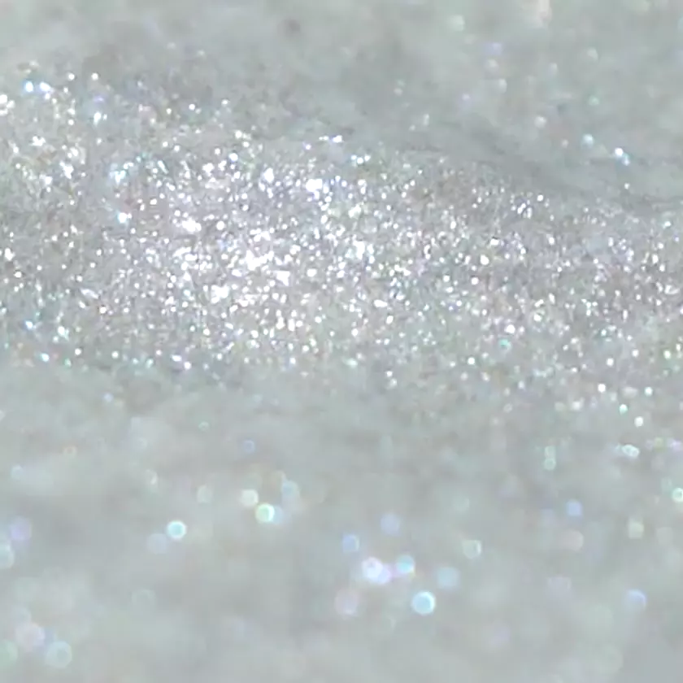
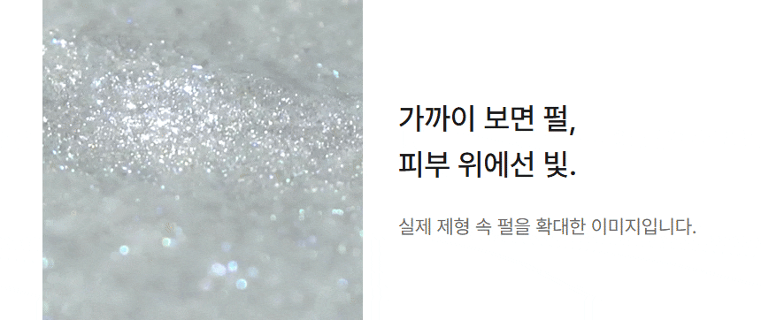
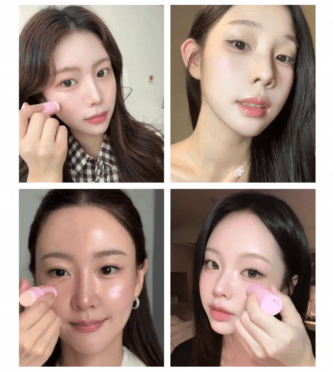
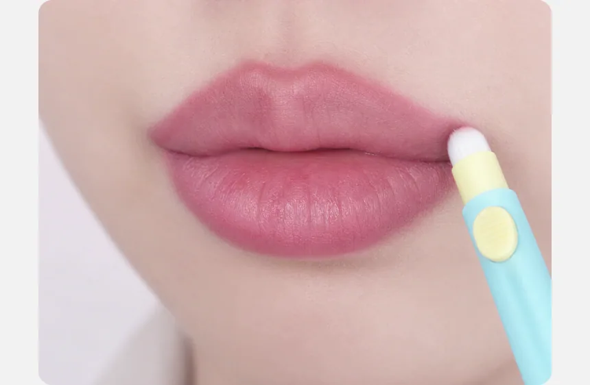
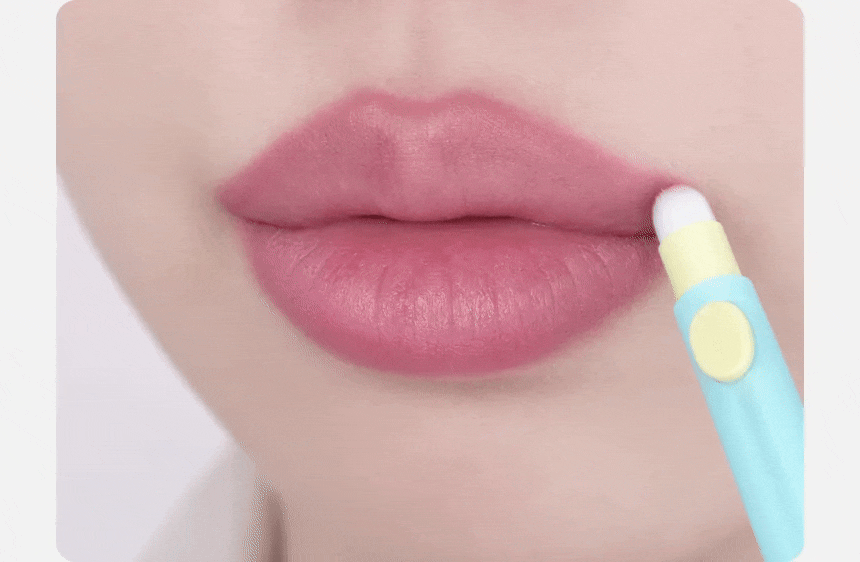
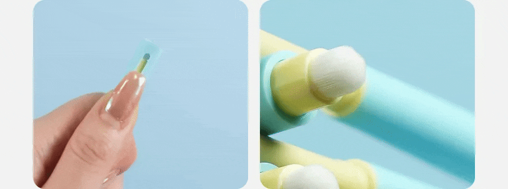
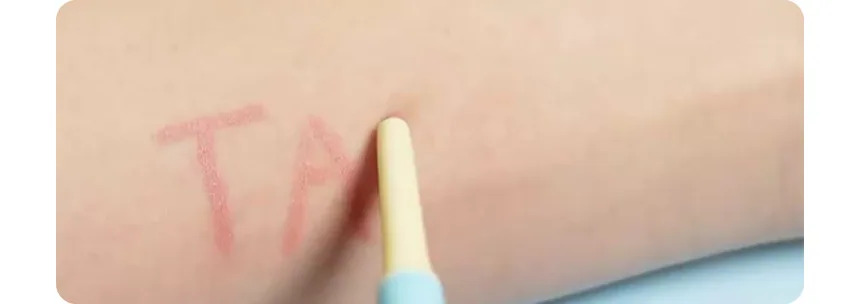

2026.10.19 · CAFE24 등록 기준 · 운영몰 반영 전 검토
등록 파일과 미리보기를
같은 구성으로.
기본 상세는 JPG·PNG·GIF로 구성했습니다. 별도 스크립트, 웹폰트, 영상 장면 선택 버튼 없이 표시됩니다. 기존 디자인은 모바일 430px 화면을 기준으로 출력했고, 립라이너는 현재 연결된 R34 파일을 사용했습니다. 클라우드 하단 제품정보·전성분은 일반 HTML 텍스트로 포함했습니다.
| 제품 | 등록 이미지 | 전체 용량 | 확인 / 다운로드 |
|---|---|---|---|
| 클라우드 블러 | 7개 / GIF 1개 + 정보 HTML | 4.4MB | 미리보기 · 등록 파일 |
| 밀키치크 | 9개 / GIF 1개 | 5.4MB | 미리보기 · 등록 파일 |
| 하이라이터 | 14개 / GIF 3개 | 11.5MB | 미리보기 · 등록 파일 |
| 립오일 | 7개 / GIF 0개 | 2.2MB | 미리보기 · 등록 파일 |
| 립라이너 | 16개 / GIF 3개 | 11.6MB | 미리보기 · 등록 파일 |
각 파일 4.9MB 미만. 아래쪽 파일은 지연 로딩합니다. GIF는 3회 재생 후 멈춥니다. 표의 용량은 상품별 모든 이미지를 합한 값입니다.
GIF의 색상 수와 프레임 제한 때문에 미세한 펄과 피부 질감에는 차이가 남습니다. 원본 MP4를 별도 HTTPS 영상 호스팅에 연결하는 등록 템플릿도 준비했습니다. 현재 호스팅 연결과 실제 카페24 재생 확인은 미완료입니다.
외부 영상 연결용 파일클라우드는 원본의 세 장면에서 4.4초를 선택했습니다. 밀키치크·하이라이터·립라이너는 원본 구간을 유지했습니다. 원본 사진과 영상 파일에는 색 보정이나 재생성을 하지 않았습니다.
등록 HTML은 예정 경로 /web/upload/tam-detail-20261019/를 사용합니다. 카페24에 파일을 올리기 전에는 작동하는 주소가 아닙니다. 브라우저 확인과 운영몰 적용 완료를 구분합니다.
클라우드 블러 · 움직이는 소재 03
4.4초 · 860px · 12fps · 3.38MB · 3회 재생 후 정지

밀키치크 · 움직이는 소재 03
3.1초 · 688px · 10fps · 4.45MB · 3회 재생 후 정지

하이라이터 · 움직이는 소재 02
3.5초 · 600px · 8fps · 4.28MB · 3회 재생 후 정지
하이라이터 · 움직이는 소재 07
2.6초 · 860px · 12fps · 1.15MB · 3회 재생 후 정지


하이라이터 · 움직이는 소재 10
2.8초 · 688px · 10fps · 4.50MB · 3회 재생 후 정지

립라이너 · 움직이는 소재 04
4.0초 · 860px · 12fps · 3.23MB · 3회 재생 후 정지


립라이너 · 움직이는 소재 06
3.9초 · 860px · 12fps · 2.19MB · 3회 재생 후 정지

립라이너 · 움직이는 소재 09
3.6초 · 860px · 12fps · 1.54MB · 3회 재생 후 정지

확인 범위
320·390·860px에서 자바스크립트를 끄고 파일 표시, 가로 넘침, 이미지 사이 틈을 확인했습니다. GIF 전체 프레임 디코딩과 ZIP 파일 검사를 통과했습니다. 카페24 관리자 저장, 모바일 상품 상세 반영 및 실제 기기 확인은 다음 적용 단계입니다.